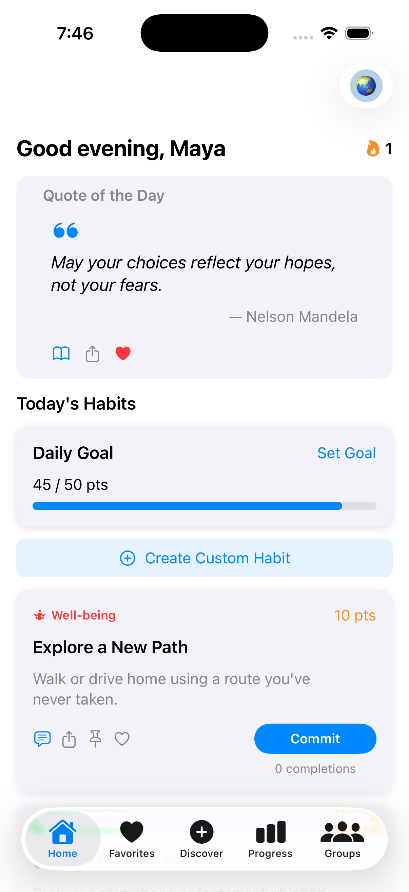
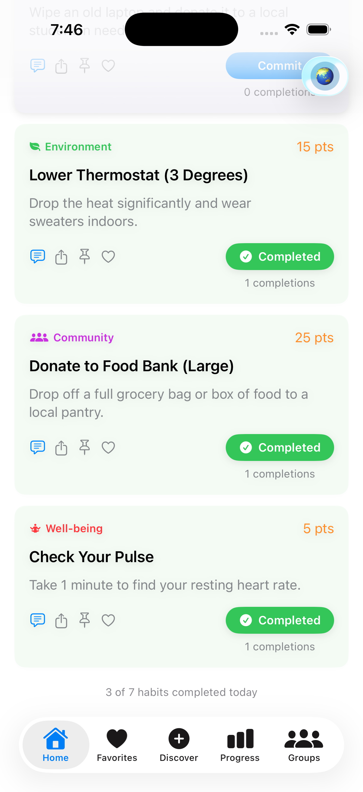
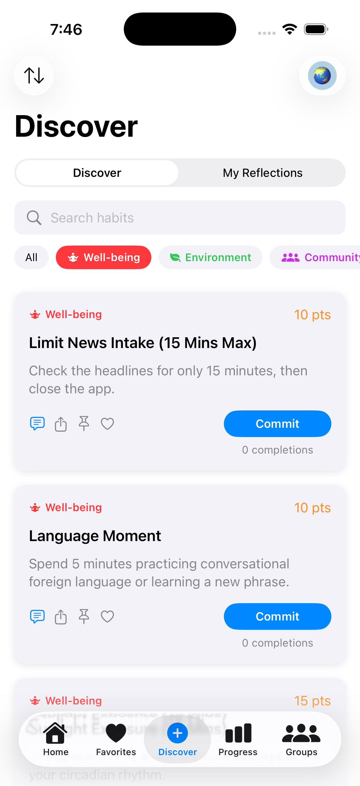
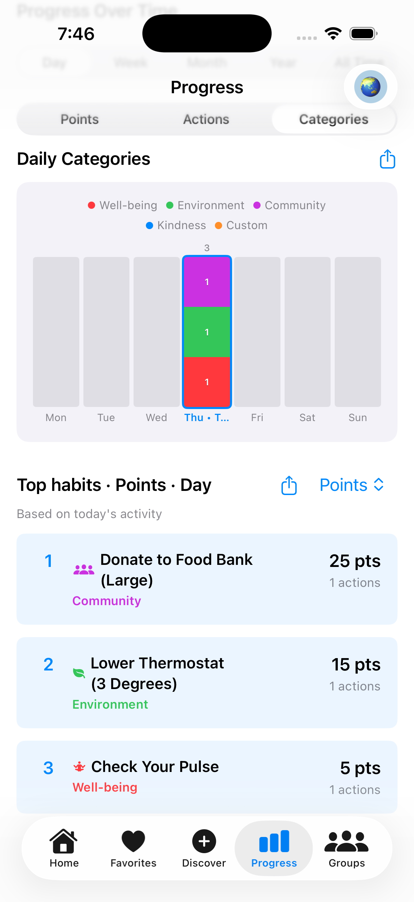
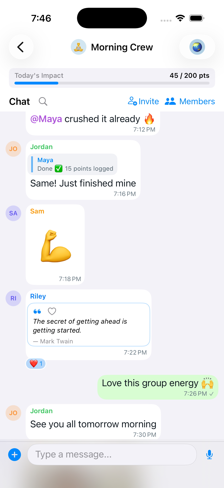

Daily Compass for mindful living
Poonya
Poonya helps you turn small, intentional actions into daily momentum. Each morning begins with a Daily Spark, followed by four simple seeds of change across Self, Others, Neighborhood, and Earth. It is a calm, practical companion for growing well-being, kindness, community, and environmental care, one day at a time.
The four circles of impact
A daily rhythm that feels simple, warm, and doable.




Built for real life
Small actions that add up to meaningful change.
In a world that can often feel overwhelming, it is easy to wonder if one person's choices truly matter. Poonya is built on the Daily Compass: a holistic approach to living that shows how small, intentional actions create a ripple effect far beyond yourself.
Start each day with a Daily Spark and four curated do-good habits. Complete habits, earn points, track your daily goal and streak, and see your progress over time with charts and impact insights.
- Save favorite habits and quotes for quick access.
- Reflect with journal entries on quotes that move you.
- Discover new habits, create your own, and add personal notes.
- Join groups with friends, family, or colleagues.
- Chat, share habits and quotes, and celebrate progress as a team.
- Turn individual ripples into a wave of positive change.
The Daily Compass
The four circles of impact.
Self
The center. You cannot pour from an empty cup. Nourishing your mind and body creates the foundation for everything else.
Others
The spark. A simple gesture or mindful word can transform someone's day and build human connection.
Neighborhood
The foundation. Strengthening local bonds creates a resilient, supportive ecosystem for everyone.
Earth
The legacy. Small acts of stewardship help ensure the world we leave behind is as vibrant as the one we inherited.
Poonya's Daily Compass is a holistic rhythm, not a rigid checklist. Your four daily seeds are your contribution to a better world, one manageable day at a time.
At the heart of Poonya is Punya: the idea that every mindful choice is a seed. Plant them today, nourish them together, and watch the world bloom.
Poonya is free to use. An optional one-time in-app purchase unlocks higher group limits.
Now Available!
Download the app in three simple steps.
-
1
Open the App Store
-
2
Search for Poonya
Confirm the app name, logo, and publisher details.
-
3
Install and begin
Download the app and start your first Daily Spark.